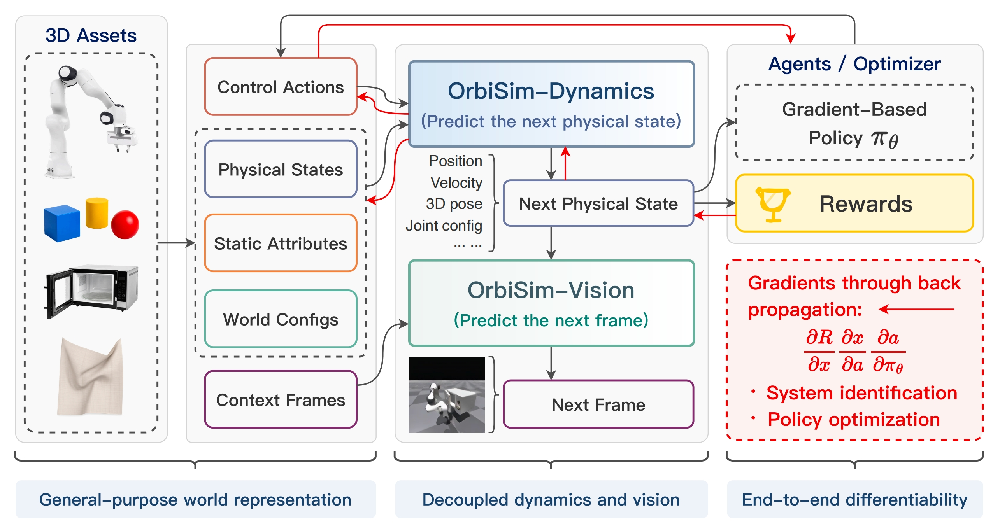

Homepage
Jiajian Li 李佳键
PhD Student
MoE Key Lab of Artificial Intelligence, AI Institute, School of Computer Science, Shanghai Jiao Tong University
About
Biography
I am a PhD student at Shanghai Jiao Tong University, advised by Yunbo Wang. My research interests include world models, reinforcement learning, and embodied AI.
I am broadly interested in building physically grounded models that connect perception, dynamics, and control for intelligent agents, with a particular focus on simulation and embodied decision making.